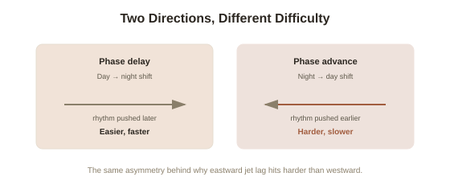

Chapter 6: Shift Work and the Circadian Mismatch
Chapter 5 closed with a full toolkit for working with a fixed sleep pattern — but all of it assumes the pattern itself is stable. A shift change (night to day, or the reverse) breaks that assumption directly: it isn't insomnia in the usual sense, and CBT-I's core advice (a fixed wake time, a consistent schedule) is exactly the thing a shift change temporarily takes away from you. This closing chapter covers what's actually happening during that adjustment, and the specific, evidence-based levers for speeding it up.
Your clock runs on light, not on a work schedule
The body's master clock — a small structure called the suprachiasmatic nucleus (a cluster of neurons in the hypothalamus that generates the body's roughly 24-hour circadian rhythm and synchronizes it to the outside world) — doesn't know or care what a work schedule says. It's synchronized almost entirely by light exposure, specifically light hitting the retina at certain times relative to your existing rhythm. A shift change asks this clock to physically move — shifting the timing of core body temperature, cortisol release, and melatonin production by several hours — and light is by far the strongest lever available for making that move happen faster than it would on its own.
Why the direction of the shift matters
Chronobiologists distinguish between a phase delay (pushing your rhythm later — staying up later, waking later, as when moving from a day schedule to a night schedule) and a phase advance (pushing it earlier — as when moving from night shift back to a day schedule). The body's natural free-running rhythm is slightly longer than 24 hours for most people, which makes a phase delay generally easier and faster to adapt to than a phase advance — a genuinely inconvenient asymmetry for anyone who was on nights and is now expected to be alert at 8am, since that's the harder direction to move in. This isn't a personal failing or a sign of poor discipline; it's the same underlying biology behind why jet lag traveling east (also a phase advance) tends to feel worse than traveling west.

Light timing: the single strongest lever
The core practical tool is deliberately controlling light exposure around the shift, based on a well-established chronobiology principle called the phase response curve — light has a very different effect on the clock depending on when relative to your body's rhythm it hits you. For someone newly on a day schedule after nights, the goal is bright light exposure soon after the new, earlier wake time (daylight, or a bright light device, is far more effective than typical indoor lighting) to help pull the rhythm earlier, combined with deliberately avoiding bright light in the few hours before the new, earlier bedtime — sunglasses worn outdoors during that evening window are a genuinely evidence-supported tool, not an overreaction, precisely because even brief bright light exposure at the wrong time can partially undo the day's progress.
Melatonin as a timing signal, not a sedative
Melatonin is often taken as if it were simply a sleep aid, but its more precisely evidenced use in shift adjustment is as a chronobiotic (a substance that shifts the timing of the circadian clock itself, rather than just producing drowsiness in the moment) — a low dose (typically well under the amounts sold in many over-the-counter products) taken several hours before the desired new bedtime, timed consistently, can help pull the internal clock toward the new schedule, working as a chemical signal rather than as a knockout dose taken right at bedtime. Because timing is what does the actual work here, getting the timing wrong can be close to useless even at a correct dose — this is a case where following a sleep-medicine-informed schedule matters more than simply taking more of it.
What to actually expect, timeline-wise
Left to adjust on its own, without any of the above interventions, the circadian clock typically shifts at a rate of roughly one hour per day for a phase delay and somewhat slower for a phase advance — meaning a full, unassisted adjustment across a large shift change can genuinely take a week or more, which lines up with why the first several days after a shift change reliably feel the worst regardless of how much total sleep you're getting. Deliberately managed light exposure and correctly timed melatonin can meaningfully shorten this window, but neither eliminates it outright — the honest expectation, consistent with this arc's running theme of working with the body's actual architecture rather than against it, is a genuinely rough handful of days, made shorter and more bearable by these tools rather than skipped entirely.
Try this
Ideas for noticing or testing this in your own life.
- If you've recently moved from nights to days, get outside (or near a bright window) as soon as possible after waking for the next several days — this single change is the most evidence-backed lever available to you.
- Wear sunglasses for the last couple of hours before your new bedtime for the first week — it feels unnecessary in daylight, but it's directly protecting the progress your clock made that day.
Worth pulling on?
A few loose threads from this chapter — if any of these genuinely grab you, that's a good sign of where to go next.
- For something to try immediately, without waiting on a multi-day light-and-melatonin schedule, this topic now also has a short, practical field guide. → See below: hands-on techniques for tonight, and a step-by-step shift-reset plan.
- The same asymmetry between phase delays and phase advances explains a very well-known travel phenomenon. → Already in the library: this chapter's jet lag comparison is the same mechanism behind why eastward travel tends to hit harder than westward travel.